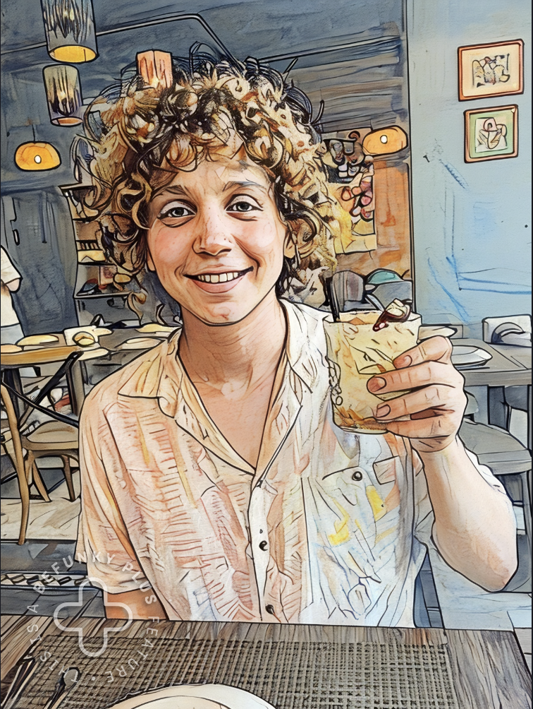

I'm Elie! I'm a Harvard senior studying
Computer Science & Philosophy.
I like writing, coding, and occasionally pretending I understand weighty things.
About Me
- Grew up between Lebanon and the U.S.
- Debate champion in three states.
- Lived three months in the Amazon.
- Classical pianist with pre-professional training.
Tech Work
- Worked full-stack at Keel Ventures, building AI-powered startup research tools.
- Developed and marketed digital learning products for Harvard.
- Leading a team building an AI-driven email chatbot startup.
Writing & School
- Editor-in-Chief of The Harvard Lampoon, the world's most famous college humor magazine.
- Wrote a book draft that made it to the final round at Back Bay Books.
- Wrote my thesis with Harvard’s Philosophy Department Head.